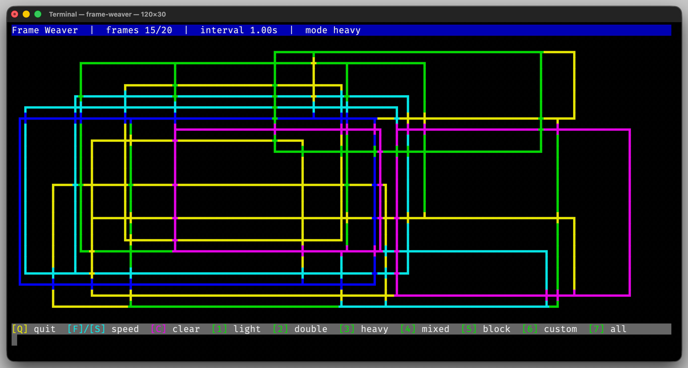
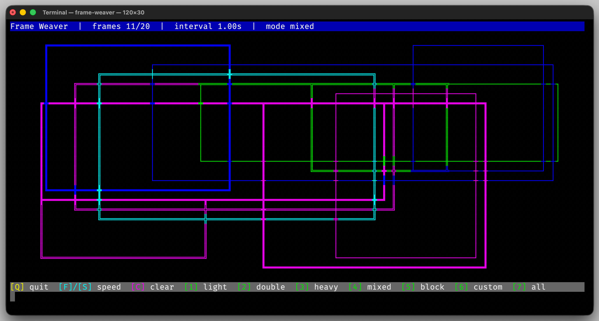

Frame Weaver
frame-weaver demonstrates the frame drawing system of the library. The application continuously places
randomly sized frames on the terminal so you can observe how the rendering engine resolves intersections and
combines different frame styles.
While the demo is running, frames with varying sizes, colors, and line styles are added dynamically. This makes it easy to see how mixed line styles, custom frame tiles, and automatic intersection handling behave in practice.
{kind=link}

{kind=link}

Run the Demo
Start the demo from the build directory:
$ ./cmake-build-debug/demo-apps/frame-weaver
The application continuously updates the screen and allows you to interact with the animation using the keyboard.
Features Shown
This demo highlights several important features of the frame rendering system:
Use of predefined
FrameStylevalues as well as customChar16Styletiles.Automatic resolution of frame intersections using
CharCombinationStyle::commonBoxFrame().Animated screen updates with a continuously redrawn terminal buffer.
Palette-driven color variations using
ColorSequence.
Relevant Source Files
If you want to explore the implementation, start with:
demo/frame-weaver/src/FrameWeaverApp.cpp
This file contains the rendering loop, the frame placement logic, and the definition of the custom frame style used by the demo.